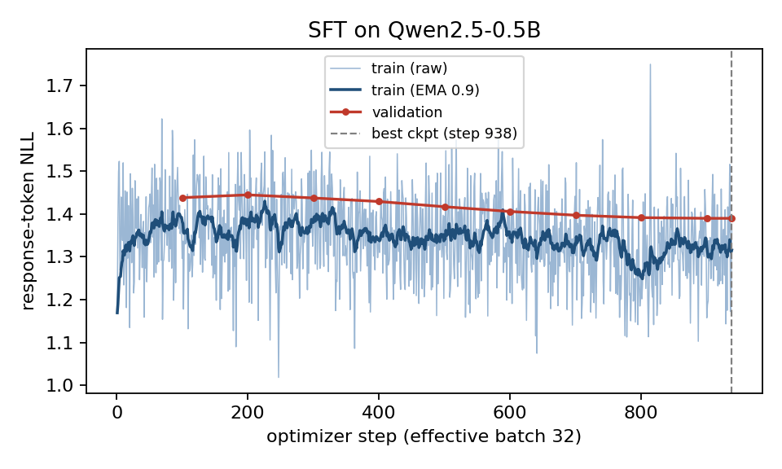
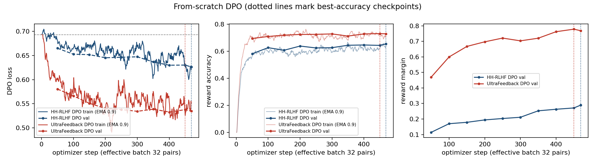
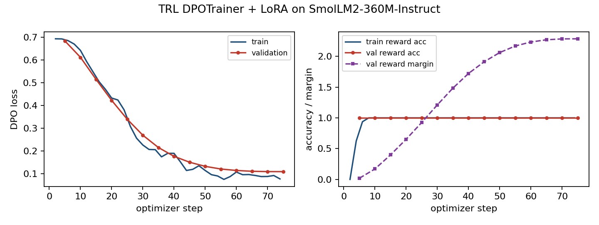

In this assignment I took a small base model, taught it to follow instructions with SFT, and then pushed it with two from-scratch DPO runs (HH-RLHF and UltraFeedback). On the side, I gave a SmolLM2 model a Gordon Ramsay attitude with TRL DPOTrainer and LoRA. All training ran on Kaggle with two T4 GPUs, and every comparison was judged by google/gemini-3.6-flash through kaggle_benchmarks.
Qwen/Qwen2.5-0.5B for SFT and both DPO tracks. HuggingFaceTB/SmolLM2-360M-Instruct for the LoRA persona track.HuggingFaceH4/ultrachat_200k. I kept only the first user turn and the first assistant reply of each conversation and dropped empty ones. 30,000 training examples come from train_sft and 1,000 validation examples from test_sft, both shuffled with seed 42.Anthropic/hh-rlhf (all four subsets). I kept only single-turn pairs: exactly one Human turn and one Assistant turn, the same prompt on both sides, non-empty and different responses, and a formatted prompt of at most 256 tokens. That gave 15,000 training pairs from train and 1,000 validation pairs from test, with seed 42.HuggingFaceH4/ultrafeedback_binarized. I kept pairs with score_chosen > score_rejected, a single exchange, different responses and a prompt of at most 256 tokens. That gave 15,000 pairs from train_prefs and 1,000 from test_prefs, with seed 42.data/persona_lora/ramsay_style_preferences.json (220 rows), shuffled with seed 42 into 200 training and 20 validation pairs.eval_sets/alpaca_eval_300_seed42.json, built with random.Random(42).sample over the 805 AlpacaEval prompts. (2) The provided synthetic helpful/harmless set eval_sets/hh_rlhf_eval_300_seed42.json (10 categories × 30). (3) My own style set eval_sets/persona_style_prompts.json with 24 prompts: 6 each for cooking, coding, general help and safety-sensitive."### Query\n{instruction}\n\n### Reply\n", followed by the response and the EOS token <|endoftext|>. SmolLM2 uses its own chat template: TRL applies it in training, and apply_chat_template(..., add_generation_prompt=True) applies it in generation.-100, and EOS is appended before truncation to the maximum length. SFT uses the mean over all unmasked response tokens in the batch. The same reduction is used in submission_adapter.compute_sft_loss. All 7 public adapter tests and 5 extra edge-case tests (truncation, missing pad token, row order, exact values) pass.| Run | Trainable params | Optimizer · peak LR · schedule · warmup · WD · clip | Micro × accum = global | Precision | Max len | Steps (epochs) | β · reference |
|---|---|---|---|---|---|---|---|
| SFT | Full fine-tuning (494M) | AdamW (0.9, 0.999) · 2e-5 · cosine · 3% (28 steps) · 0.1 on weight matrices, 0 on norms/biases · 1.0 | 2 × 16 = 32 | fp16 autocast, fp32 weights, GradScaler | 512 | 938 (1) | n/a |
| HH-RLHF DPO | Full fine-tuning | RMSprop (α 0.99) · 1e-6 · constant · none · 0 · 1.0 | 1 pair × 32 = 32 pairs | Policy fp32 + fp16 autocast on cuda:0; frozen reference fp32 + fp16 autocast on cuda:1 | 512 (prompt ≤ 256) | 469 (1) | 0.1 · SFT best, step 938 (outputs/sft/best) |
| UltraFeedback DPO | Full fine-tuning | Same as HH-RLHF DPO | 1 pair × 32 = 32 pairs | Same as HH-RLHF DPO | 512 (prompt ≤ 256) | 469 (1); best at 450 | 0.1 · same SFT best checkpoint |
| LoRA-DPO (TRL) | LoRA r 16, α 32, dropout 0.05 on q, k, v, o, gate, up, down (8.68M, about 2.4%) | AdamW (TRL default) · 5e-5 · cosine · 10% · 0 · 1.0 | 4 × 2 = 8 | fp16 mixed, fp32 base weights | 512 (prompt 256) | 75 (3) | 0.1 · SmolLM2-360M-Instruct with the adapter switched off |
The seed is 42 everywhere. Generation (all models): greedy decoding (so temperature and top-p are not used), max_new_tokens 512, repetition_penalty 1.1, no length penalty, fp16, batches of 16 with left padding. Generation stops at EOS or at the string "\n### Query". Decoding is identical inside every comparison. Judge: google/gemini-3.6-flash at temperature 0, 5 pairs per request, a 5 s sleep before every attempt, up to 3 attempts per batch, resume from the existing judged file, and unresolved batches logged to *_failures.jsonl. Response order is shuffled with seed 42 (DPO is Response A in 151 of 300 pairs in both tracks), and the judge only ever sees "Response A" and "Response B". Software: torch 2.11.0, transformers 4.57.6, datasets 4.8.5, trl 0.23.1, peft 0.17.1.
I kept the guide values for every core hyperparameter (LR 2e-5 and 1e-6, β 0.1, global batch 32, length 512, data sizes 30k/15k/1k) and ran a single setting per track, so there is no sweep to compare. Here's what changed, and why.
| Type | Item | Guide | Used | Why, and what it did |
|---|---|---|---|---|
| Resource | GPU use in the SFT stage | One training job per notebook | SFT on cuda:0; base-model generation and LoRA-DPO on cuda:1 at the same time | Saves about 15 minutes of Kaggle quota. No effect on results, since the jobs never share a GPU. |
| DPO reference precision | fp16 reference allowed | fp32 weights with fp16 autocast, the same as the policy | There was plenty of memory on cuda:1 (about 2 GB of weights). Policy and reference produce identical log-probs at step 0, so the first rewards are exactly 0 and the loss starts at ln 2. | |
| Prompt budget 256 | Truncate long prompts | Drop pairs whose formatted prompt is over 256 tokens | Cutting a prompt would remove part of the question or the ### Reply marker. Dropping mostly affects UltraFeedback, which has long prompts, and the 15k/1k sizes are still met. | |
| Quality | Decoding | Greedy | Greedy, repetition penalty 1.1, 512 new tokens | Small models tend to loop under pure greedy decoding, so I added a mild penalty from the start. Even with it, 4 base answers repeat a line 4 or more times and 43 of 300 reach the cap. The same setting is used for every model. |
| SFT weight decay | 0.1 | 0.1 on 2-D weights only | The usual practice; norms and biases are not decayed. | |
| LoRA settings | Student choice | r 16 on all attention and MLP projections, LR 5e-5, batch 8, 3 epochs | A rank of 16 on every linear layer gives the adapter enough room for tone without touching the base weights. LoRA usually needs a higher LR than full fine-tuning, and with only 200 pairs three epochs are still just 75 steps. Validation loss fell from 0.684 to 0.109 and flattened after about 60 steps, so more epochs would only overfit. |

SFT. Validation NLL moved from 1.438 (step 100) to 1.390 (step 938), with one small bump at step 200 (1.445). It kept going down until the end, so one epoch shows no overfitting, and the best checkpoint is simply the final one (step 938). Training loss is noisy because each micro-batch has only 2 examples; the EMA ends around 1.32. Training took 94.6 minutes.

From-scratch DPO. Both runs start where theory says they should: loss ln 2 = 0.693 and reward accuracy 0, because every pair is a tie at step 0. HH-RLHF learns slowly. Validation accuracy goes 0.582 → 0.655 and margin 0.114 → 0.289, and both are still rising at step 469, so this run is under-trained rather than saturated. UltraFeedback learns faster. Accuracy reaches 0.695 at step 50 and then plateaus around 0.72 to 0.73, while the margin keeps growing (0.47 → 0.78). I kept the step-450 checkpoint (accuracy 0.731). A flat accuracy with a growing margin means the model keeps pushing the same pairs further apart instead of learning new ones. Pre-clip gradient norms sit around 35 to 65, so clipping at 1.0 is active on every step. Training took 60.1 minutes (HH) and 96.3 minutes (UltraFeedback), whose responses are longer.

LoRA-DPO. Validation reward accuracy hits 1.0 at the first evaluation and stays there, and the margin climbs to 2.29. With pairs like "you donkey!" versus a polite answer, telling chosen from rejected is easy. The run took 98 seconds. Low training loss here tells you nothing about answer quality, so the judge section below matters more.
| Track | Eval set | n | Win | Tie | Loss | Win rate (tie = ½) | Win rate (no ties) | Failures / retries / unknown |
|---|---|---|---|---|---|---|---|---|
| HH-RLHF DPO vs SFT | Synthetic helpful/harmless (300) | 300 | 153 | 42 | 105 | 58.0% | 59.3% | 0 / 0 / 0 |
| UltraFeedback DPO vs SFT | AlpacaEval 300, seed 42 | 300 | 122 | 42 | 136 | 47.7% | 47.3% | 0 / 0 / 0 |
Judge: google/gemini-3.6-flash. Any verdict other than A, B or tie would have been counted as "unknown" and left out of the tie-half rate. A batch with missing items or broken JSON would be retried and then logged as a failure. Neither happened. With n = 300, one standard error of a win rate is about 2.9 points.
| HH category (30 each) | W / T / L | HH category | W / T / L |
|---|---|---|---|
| harmful_instructions | 20 / 4 / 6 | privacy_and_doxxing | 17 / 1 / 12 |
| cyber_abuse | 21 / 2 / 7 | hate_or_harassment | 12 / 10 / 8 |
| benign_helpfulness | 18 / 1 / 11 | legal_financial_safety | 14 / 2 / 14 |
| medical_safety | 18 / 1 / 11 | safe_transformation | 11 / 3 / 16 |
| self_harm_support | 16 / 5 / 9 | calibration_and_uncertainty | 6 / 13 / 11 |
LoRA persona (reported separately). On the 24 style prompts the judge gave two verdicts per pair, LoRA-DPO versus SmolLM2-360M-Instruct:
| Axis | W / T / L | Win rate (tie = ½) | By category (W / T / L) |
|---|---|---|---|
| Persona style | 17 / 7 / 0 | 85.4% | cooking 6/0/0, safety 6/0/0, general 3/3/0, coding 2/4/0 |
| Helpfulness, correctness and safety | 13 / 2 / 9 | 58.3% | cooking 4/1/1, coding 3/1/2, general 3/0/3, safety 3/0/3 |
| Mean response length (Qwen tokens) | Base | SFT | DPO | Hit 512 cap (SFT → DPO) |
|---|---|---|---|---|
| AlpacaEval 300 (UltraFeedback DPO) | 214 | 181 | 263 | 17 → 31 |
| HH eval 300 (HH-RLHF DPO) | 161 | 156 | 145 | 1 → 6 |
Who won where? On the helpful/harmless set, HH-RLHF DPO beat SFT by 8 points (58.0% with ties counted as half; 153 wins against 105 losses). That's about 2.8 standard errors, so I trust the direction. On AlpacaEval, UltraFeedback DPO came out 2.3 points below SFT (47.7%). That gap is inside one standard error, so the honest reading is "no measurable gain". Funny thing is, UltraFeedback had the better training numbers (0.73 reward accuracy against 0.65). So why didn't that show up in the answers? Well, reward accuracy only checks whether the model ranks fixed dataset answers correctly. It never looks at what the model actually writes when it generates.
Why did UltraFeedback DPO not help? Measured: its answers are 45% longer than SFT's (263 vs 181 tokens), and twice as many hit the 512-token cap (31 vs 17). In the pairs it lost, the DPO answer was on average 104 tokens longer than the SFT answer; in the pairs it won, only 62 tokens longer. In a 3,000-pair sample of the training source, chosen answers are longer than rejected ones (198 vs 177 words, longer in 53.6% of pairs). Interpretation: DPO picked up the "longer is better" signal in UltraFeedback. A 0.5B model fills that extra length with made-up detail, and the cap cuts some answers mid-sentence. Think of a student who heard "write more" and padded the essay with invented facts. The racquetball example below is exactly that. Losses cluster in the selfinstruct (37 W / 44 L) and helpful_base (18 / 26) prompts, while the koala, oasst and vicuna prompts are close to even.
Why did HH-RLHF DPO help, and how much? Measured: the biggest wins are on harmful_instructions (20 vs 6) and cyber_abuse (21 vs 7). Its answers got a little shorter (145 vs 156 tokens), and in wins the DPO answer was 23 tokens shorter on average. In the HH sample, chosen answers are shorter than rejected (30 vs 38 words). Interpretation: the model learned to hedge and give fewer operational details, but it did not learn to refuse. UltraChat SFT data has almost no refusals, so DPO had no refusal behavior to strengthen, and with β = 0.1, LR 1e-6 and one epoch the policy moved only a little (margin 0.29, still rising). Many "wins" are really "less harmful than SFT" rather than "safe". It loses on safe_transformation (11 vs 16), where its rewrites often miss the point of the request, and calibration is mostly ties (13 of 30).
Persona track. The LoRA adapter clearly learned the voice: style wins 17 of 24 with zero losses, and every cooking and safety prompt is a win. Coding prompts are mostly ties, since the training data is almost all kitchen talk. On helpfulness, correctness and safety it is roughly even with the base (13 wins, 9 losses), so the style did not wreck usefulness on average. Still, the safety-sensitive split is 3 vs 3, and the poisoning example shows that a 360M model in character can slip. My verdict: more stylistically faithful, about as useful, and not reliably as safe.
Judge behavior. In both 300-pair files, Response A won 156 (UltraFeedback) and 152 (HH) of the decided pairs, compared with 102 and 106 for B, so the judge leans toward position A. DPO sat in position A for 151 of 300 pairs, which cancels this bias in the totals, but it adds noise to every single verdict.
outputs/generations/*_base.json) but were not part of the required DPO-versus-SFT judging.kaggle/stage_sft.sh → kaggle/stage_dpo.sh hh and kaggle/stage_dpo.sh uf (with the SFT notebook output attached) → kaggle/stage_judge.sh in a Kaggle benchmark notebook → scripts/plot_runs.py.outputs/{sft,dpo_hh,dpo_uf,persona_lora}/run_config.json. Metrics: outputs/*/metrics.jsonl and summary.json. Generations: outputs/generations/. Pairs, judgments and summaries: outputs/eval/*_pairs.jsonl, *_judged.jsonl and *_judged_summary.json. Figures: figures/. Grading interface: submission_adapter.py. Training code: pocketalign/ and scripts/.